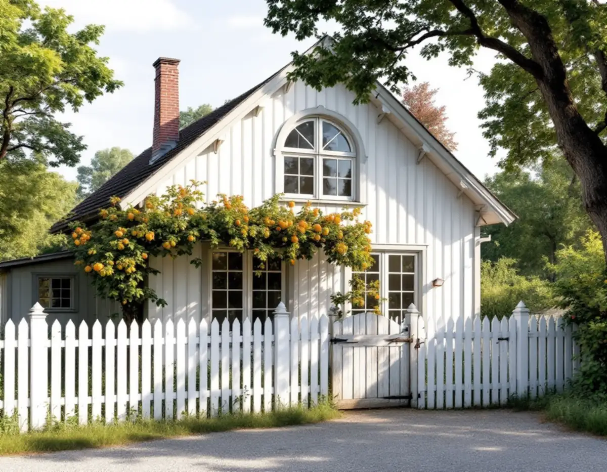

Kulturmiljökartan
Vi kontrollerar om fastigheten ligger i ett utpekat område och vilka av riktlinjernas råd som gäller där.
I Danderyd gäller kommunens riktlinjer för kulturmiljöer inte bara huset utan också det som byggs runt det: altandäck, skärmtak, staket, grindar och carport. I de värdefulla områdena krävs dessutom bygglov för åtgärder som annars är lovfria. Vi utgår från riktlinjerna och från hur tomten möter gatan.

Miljö- och stadsbyggnadsnämnden beslutade om riktlinjerna för kulturmiljöhistoriska byggnader och miljöer den 11 december 2024. Område efter område – egnahemmen i Enebyberg, de tidiga villastäderna Ösby och Djursholm, villastäderna Stocksund och Mörby – återkommer samma råd: undvik stora altandäck, skärmtak och inglasade uteplatser och balkonger mot gatan, och håll häckar och staket mot gatan låga.
Avskärmande plank bör enligt riktlinjerna bara sättas upp i bullerstörda områden. Garage och carport bör inte placeras mot gatan. För Stocksund och Mörby förklaras varför: förgårdens öppna rum mot gatan sluts, och ett dubbelgarage i tomtgräns blir en främmande volym i området.
I kvarteret Yggdrasil går riktlinjerna längre och säger att en tillbyggnad i första hand ska göras så att den inte syns från gatan. För grupphusen i Djursholm ska tomten avgränsas med en låg häck eller ett staket, och den öppna förgårdsmarken bör inte bebyggas.
I riktlinjernas allmänna råd till fastighetsägare står att trädgården är en viktig del av en värdefull miljö, och att detaljer som staket, murar och stenbelagda gångar kan ha ett högt kulturhistoriskt värde. För Djursholms tidiga villastad, kvarteret Yggdrasil och villastäderna i Stocksund och Mörby nämns staket, grindar och murar uttryckligen bland det som bör bevaras.
Ett äldre spjälstaket med grind lagas därför helst: ruttna stolpfötter byts, spjälor kompletteras i samma bredd och avstånd och grindens beslag justeras. Enligt Boverket krävs inget bygglov för ett vanligt staket, som är lägre och glesare än ett plank. Ett tätt plank har egna regler.
Ska något som omfattas av avståndsreglerna placeras närmare gatan än 4,5 meter kan kommunen lämna medgivande mot allmän plats, som gata, park eller naturområde. Placeringen får inte hindra drift och underhåll eller försämra sikten och trafiksäkerheten, och till förfrågan ska en skalenlig situationsplan med mått till fastighetsgränsen bifogas.
Kommunens sida om nya regler för bygglov anger att altaner, plank och murar inom 3,6 meter från ett en- eller tvåbostadshus får byggas utan lov upp till 1,8 meter, och längre bort upp till 1,2 meter. Men ligger fastigheten inom ett kulturhistoriskt särskilt värdefullt område, eller är byggnaden själv särskilt värdefull, krävs bygglov. Samma lovplikt gäller i områden som är riksintresse för kulturmiljövården.
Riktlinjerna uppmanar fastighetsägare att söka på sin adress i Kulturmiljökartan för att se om fastigheten är utpekad. De påminner också om att den som gör ingrepp i marken eller bygger till själv ansvarar för att ta reda på om det finns fornlämningar på platsen, och att frågor om det ställs till länsstyrelsens kulturmiljöenhet.
Murar och plank högre än 1,2 meter ska stå minst 4,5 meter från tomtgränsen. Närmare krävs skriftligt medgivande från samtliga berörda grannar, och kommunen påpekar att detaljplanen ibland hindrar en placering även när grannen säger ja.
En tillbyggnad av ett en- eller tvåbostadshus kräver bygglov när den sammanlagda ytan blir större än 30 kvadratmeter, och tidigare skärmtak och attefallstillbyggnader räknas in. För fristående förråd, garage och gäststugor gäller att ytan tillsammans inte får överstiga 45 kvadratmeter och en enskild byggnad 30 kvadratmeter, med högst 4 meter till nock. Berörs husets konstruktion krävs anmälan och startbesked.
Riktlinjerna säger att tillägg ska utgå från omgivande bebyggelse i placering, utformning och volymverkan. För en carport betyder det oftast ett läge vid sidan av eller bakom huset. Byggs carporten ihop med huset påverkar det också rotavdraget, se nedan.
Ska köket byggas ut samtidigt som altanen görs om kan arbetena samordnas med köksrenoveringen i Danderyd.
Vi kontrollerar om fastigheten ligger i ett utpekat område och vilka av riktlinjernas råd som gäller där.
På plats tittar vi på förgård, staket och grindar och på var en altan eller carport kan placeras.
Hamnar något närmare tomtgräns än 4,5 meter tar vi fram en situationsplan för grannarnas eller kommunens medgivande.
Du får ett skriftligt förslag och, vid lovplikt, underlag för ansökan.
Stolpar, stomme och virke anpassas till befintliga staket, grindar och husets detaljer.
Vi går igenom resultatet med dig på tomten och lämnar en sammanställning.
Ett staket ger inget rotavdrag, enligt Skatteverkets genomgång av vilka arbeten som räknas. En altan eller balkong som är ihopbyggd med huset gör det, liksom en carport eller ett garage som byggs till huset, om minst 75 procent av väggen är gemensam eller det finns en dörr emellan. En fristående carport ger inget avdrag.
Rotavdraget är 30 procent av arbetskostnaden, högst 50 000 kr per person och år och högst 75 000 kr ihop med rut. Material och resor ingår inte. För tillbyggnad krävs att det har gått fem år efter husets värdeår. Vi gör avdraget direkt på fakturan.
Staketets längd, om grindar och stolpar ska tillverkas efter förlaga, altanens storlek och höjd och om arbetet kräver bygglov påverkar mest. Att laga ett äldre spjälstaket med grind är ett annat uppdrag än en ny altan på baksidan av ett grupphus. Platsbesöket är gratis, och därefter får du ett skriftligt kostnadsförslag.
Altan, väggar, dörrar och inredning.
Snickare i Stockholm →Takbyte, takbesiktning och plåtarbeten.
Takläggare i Danderyd →Djursholm, Stocksund och Enebyberg.
Takrenovering i Danderyd →Tidstypisk färgsättning.
Målare i Danderyd →Villor och köksutbyggnad.
Köksrenovering i Danderyd →Villor, ritningar och FTX.
Badrumsrenovering i Danderyd →Tillbyggnad, tomt och kommunens riktlinjer.
Byggföretag i Danderyd →Kalkfärg på puts, linoljefärg på trä.
Fasadmålning i Danderyd →Villastäder, egnahem och grupphus i Danderyd.
Fasadrenovering i Danderyd →Lovplikt, klassning och spröjs i Danderyd.
Fönsterbyte i Danderyd →Originalgolv i villor från 1890-talet och framåt.
Golvläggare i Danderyd →Rännor, stuprör och beslag i Danderyd.
Plåtslagare i Danderyd →Villastaden, takmaterial och solceller.
Takbyte i Danderyd →Funkis, grupphus och 1950-talsvillor.
Tillbyggnad i Danderyd →